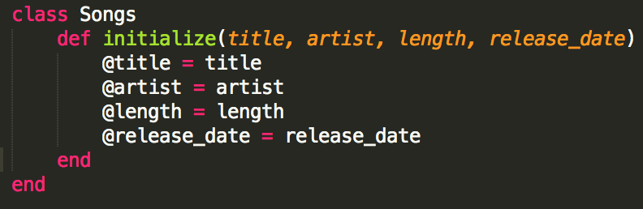

What is a class?
Suppose you have a library of songs that you want to organize. Each song has a set of characteristics including title, artist, length, and release date. By creating a Songs class, you can create an object for each song and define the behaviors of each song object. Let's begin by defining our Songs class...
Now we've defined our class and created our first instance method, initialize. Instance methods are just like the other methods that you've seen before, except they can be passed to and understood by every instance of the class in which they are created. So, when we want to create a new instance of our Songs class, we type something like this: song = Songs.new("Hotline Bling", "Drake", 240, 2015). This will create a new object (an instance of our Songs class), store it in the song variable, and instantiate it with four arguments. The def initialize instance method requires that the Songs.new method take four arguments: title, artist, length (in seconds), and release date (year).
Those funny looking variables with the @ sign are called instance variables, and they store information just like the local variables you're familiar with, except an instance variable initialized in one method within a class can be used by all of the methods defined within the class. In this case, we're initializing four instance variables and pointing them at the arguments that we receive when we call the .new method on Songs.
Now that we've created a class, defined its initialize method, and stored some information in instance variables, we can start creating methods that do stuff with our song information. For example, we could define a method that takes a release date and returns all of the song titles with the same release date. Or we could define a method that takes a single-letter string and returns all of the songs that start with that letter. Really, the possibilities are endless, if you use your imagination. What kinds of methods would you define for your Song class?